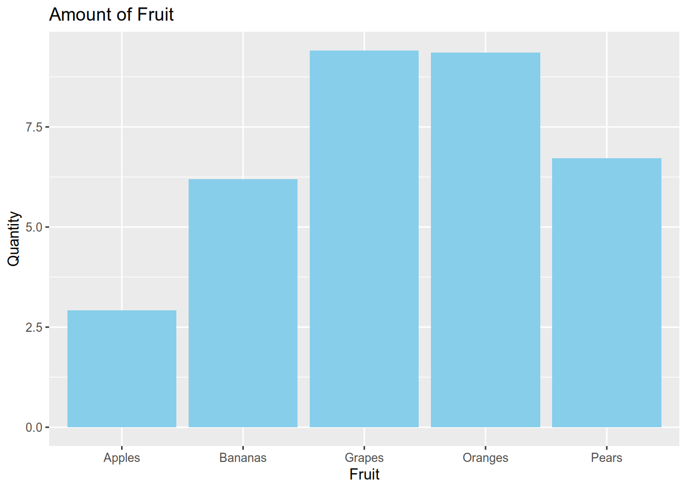
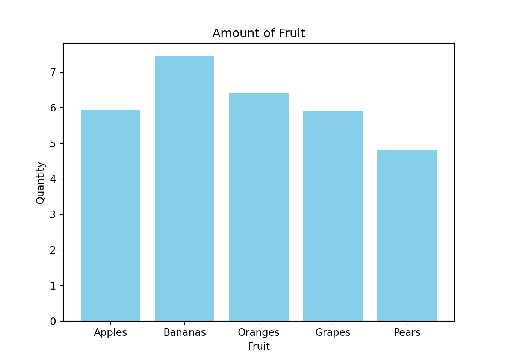
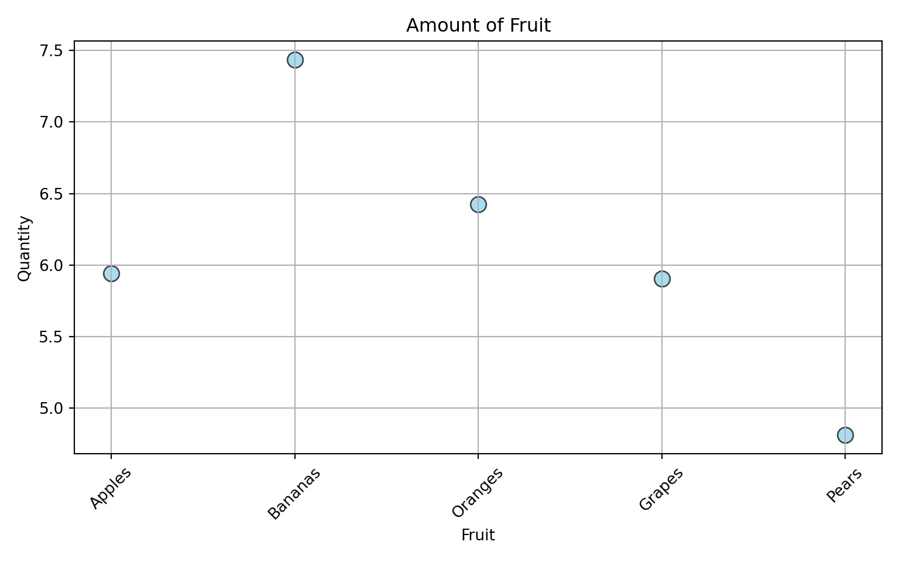
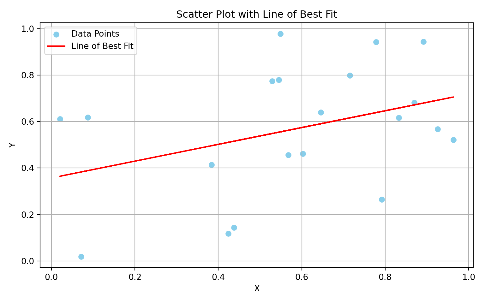
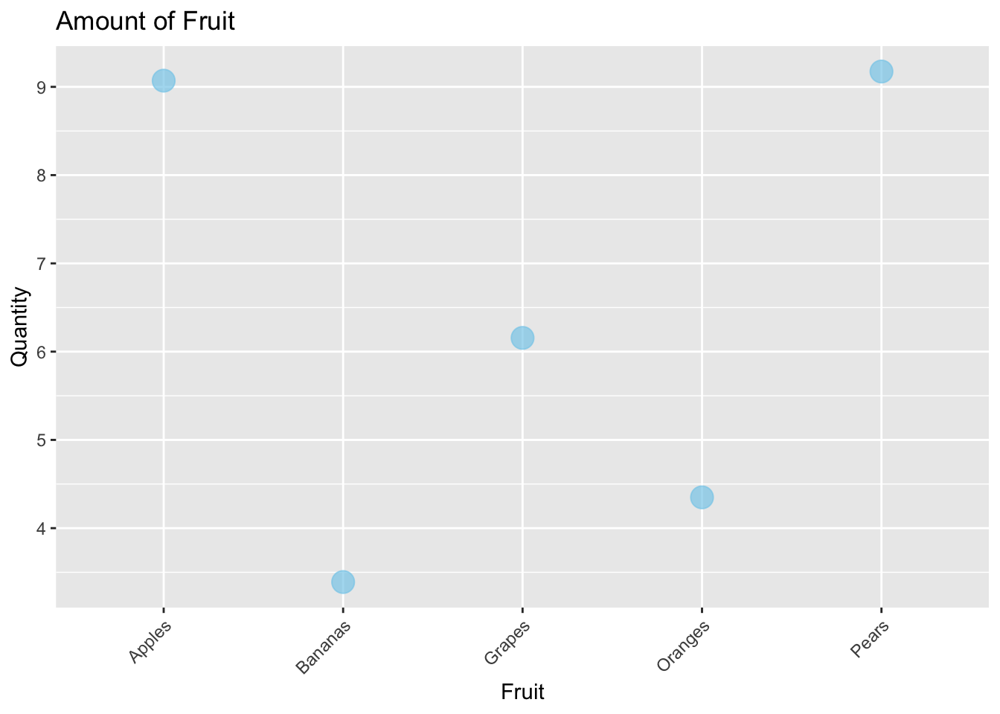
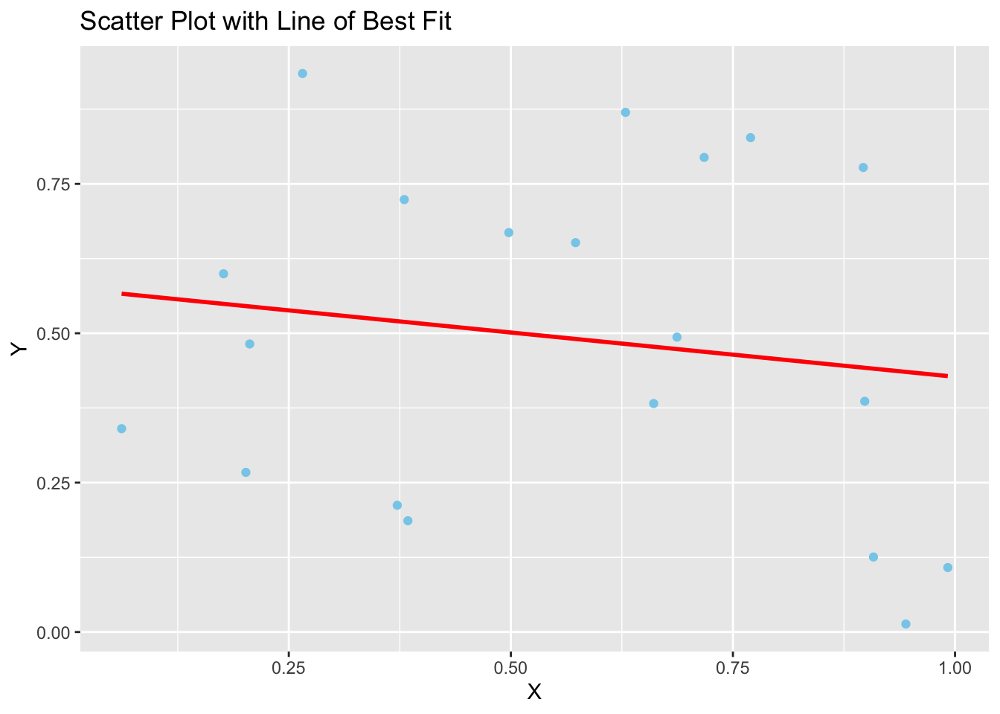
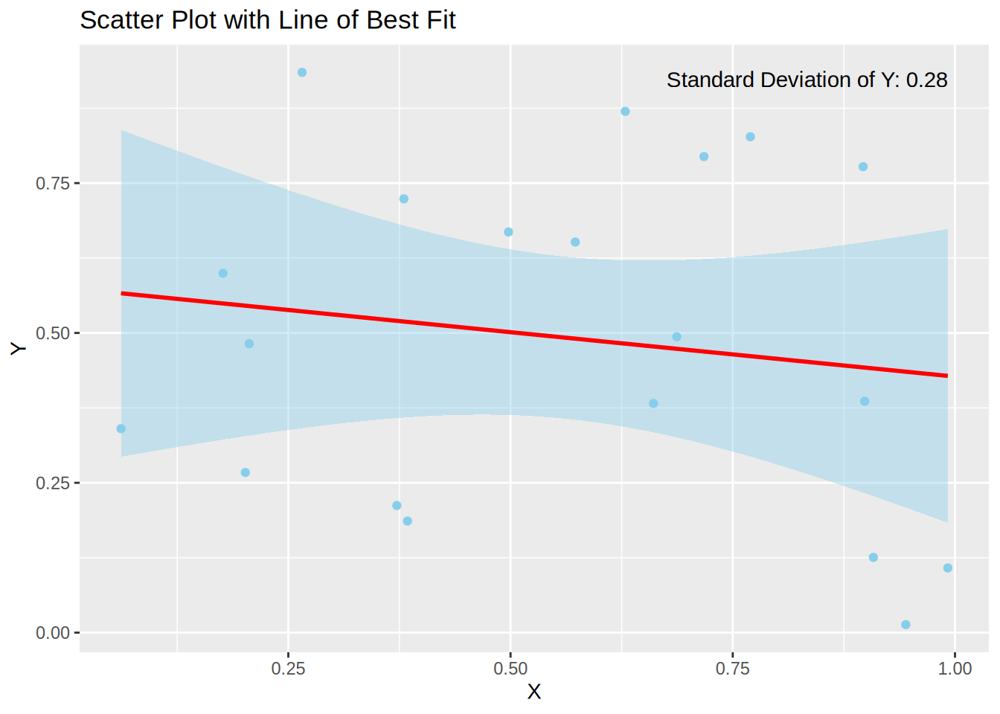
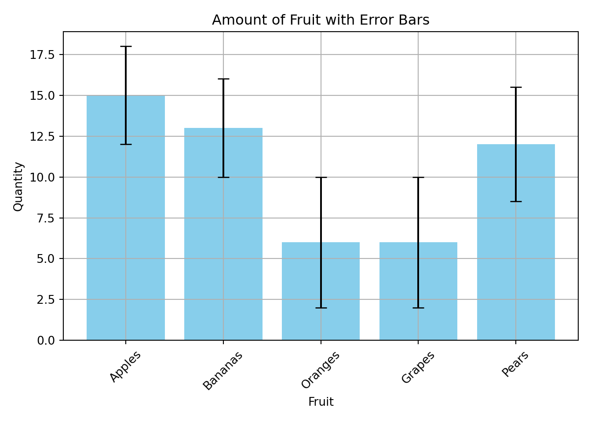

I show simple basic plotting methods using ggplot2 and matplotlib
R
python
Published
March 12, 2024
It’s time to move away from matlab entirely
While MATLAB served me well for a number of years I feel now is the time to completely stop using it all together (except for exceptional use cases, for example Psychtoolbox, but even then I’m much more inclined to use the open source MATLAB version Octave).
MATLAB themselves even write about the differences between MATLAB and Python and which one you should use. It’s true MATLAB’s documentation on functions and packages is really extensive, easily understandable and takes the lead over Python and R. But this is just because MATLAB is a private company and the subscriptions aren’t exactly cheap. For MATLAB they argue that you pay for more than just the GUI and software but also this user support (although I’ve never ever picked up the phone and called MATLAB directly with a problem I’ve had).
Still Python has, in recent years, closed the gap between computational speed of large matrices and with an ever increasing user base, has gained a lot of very useful packages and modules.
Even R is/ (arguably has) already closed this gap too. And with Rstudios nicely laid out default GUI there is really no excuse even for beginners not to use it.
MATLAB will always be used in certain fields though because it really just works well, not to mention how easy it is to use (again though the extensive and well-documented functions are partly the reason for this).
But R and Python are open source and FREE! Anyone can use them.
I want to make plots using in an open source way, how?
This blog post won’t give a full tutorial, just check out a YouTube video for that, theres really loads! Or even ask chatgpt to do it for you, since it seems to do well at basic coding anyway.
With a fully configured neovim setup (like the one I have) it makes coding easier and much faster to do. This is an additional reason to move away from MATLAB since you almost have to do everything inside of MATLABs gui.
Bar plots
Here’s an example bar plot plot in R using ggplot:
library(ggplot2)x <-runif(5, min =1, max =10)fruits <-c("Apples", "Bananas", "Oranges", "Grapes", "Pears")fruit_data <-data.frame(fruit = fruits, quantity = x)ggplot(fruit_data, aes(x = fruit, y = quantity)) +geom_bar(stat ="identity", fill ="skyblue") +labs(x ="Fruit", y ="Quantity", title ="Amount of Fruit")

In MATLAB creating the same plot would take quite a few extra lines of code for sure.
Here’s an example bar plot in python using plt.bar:
import matplotlib.pyplot as pltimport pandas as pdimport numpy as np# Generate random datanp.random.seed(0)x = np.random.uniform(1, 10, 5)fruits = ["Apples", "Bananas", "Oranges", "Grapes", "Pears"]# Create a DataFramefruit_data = pd.DataFrame({"fruit": fruits, "quantity": x})# Create the bar plotplt.bar(fruit_data['fruit'], fruit_data['quantity'], color='skyblue')plt.xlabel('Fruit')plt.ylabel('Quantity')plt.title('Amount of Fruit')plt.show()

Scatter plots
Here’s some examples of scatter plots using python:
import matplotlib.pyplot as pltimport numpy as np# Sample datanp.random.seed(0)x = np.random.uniform(1, 10, 5)fruits = ["Apples", "Bananas", "Oranges", "Grapes", "Pears"]# Create scatter plotplt.figure(figsize=(8, 5))plt.scatter(fruits, x, color='skyblue', s=100, edgecolor='black', alpha=0.7)# Add labels and titleplt.xlabel('Fruit')plt.ylabel('Quantity')plt.title('Amount of Fruit')# Rotate x-axis labels for better readabilityplt.xticks(rotation=45)
# Display the plotplt.grid(True)plt.tight_layout()plt.show()

Here’s a scatter plot in python showing the line of best fit by just plotting y = mx + b:
import matplotlib.pyplot as pltimport numpy as np# Generate random datanp.random.seed(0)x = np.random.rand(20)y = np.random.rand(20)# Calculate the line of best fitm, b = np.polyfit(x, y, 1)# Calculate correlationcorrelation = np.corrcoef(x, y)[0, 1]# Create scatter plotplt.figure(figsize=(8, 5))plt.scatter(x, y, color='skyblue', label='Data Points')# Plot the line of best fitplt.plot(x, m*x + b, color='red', label='Line of Best Fit')# Add labels and titleplt.xlabel('X')plt.ylabel('Y')plt.title('Scatter Plot with Line of Best Fit')# Add legendplt.legend()# Calculate and print correlationprint('Correlation coefficient:', correlation)
Correlation coefficient: 0.37157153754458777
# Display the plotplt.grid(True)plt.tight_layout()plt.show()

Here’s the exact same scatter plots but in R instead using geom_point:
library(ggplot2)# Sample dataset.seed(0)x <-runif(5, min =1, max =10)fruits <-c("Apples", "Bananas", "Oranges", "Grapes", "Pears")# Create data framefruit_data <-data.frame(fruit = fruits, quantity = x)# Create scatter plotscatter_plot <-ggplot(fruit_data, aes(x = fruit, y = quantity)) +geom_point(color ="skyblue", size =5, shape =19, alpha =0.7) +labs(x ="Fruit", y ="Quantity", title ="Amount of Fruit") +theme(axis.text.x =element_text(angle =45, hjust =1)) # Rotate x-axis labels# Display the plotprint(scatter_plot)

Here’s a scatter plot in R using geom_smooth to fit a line of best fit:
# Load librarieslibrary(ggplot2)# Set seed for reproducibilityset.seed(0)# Generate random datax <-runif(20)y <-runif(20)# Create data framedata <-data.frame(x = x, y = y)# Create scatter plotscatter_plot <-ggplot(data, aes(x = x, y = y)) +geom_point(color ="skyblue") +labs(x ="X", y ="Y", title ="Scatter Plot with Line of Best Fit")# Add line of best fitscatter_plot <- scatter_plot +geom_smooth(method ="lm", se =FALSE, color ="red")# Calculate correlation coefficientcorrelation <-cor(x, y)# Print correlation coefficientcat("Correlation coefficient:", correlation, "\n")
Correlation coefficient: -0.1527954
# Display plotprint(scatter_plot)
`geom_smooth()` using formula = 'y ~ x'

This is all there is to it. So the main trick here is to get the data in a format that can be read correctly. The sure fire way is to make sure the data provided to the plots is as a type array. But of course its possible to to index for example a pandas dataframe as an array.
what about error bars?
Error bars a crucial in any plot and really tell the more about what the plot means. In any scientific work no error bars is just a no go.
Here I show a scatter plot in R with shading using geom_smooth just by setting se = TRUE:
# Load librarylibrary(ggplot2)# Set seed for reproducibilityset.seed(0)# Generate random datax <-runif(20)y <-runif(20)# Create data framedata <-data.frame(x = x, y = y)# Calculate standard deviation of ystd_dev_y <-sd(y)# Create scatter plotscatter_plot <-ggplot(data, aes(x = x, y = y)) +geom_point(color ="skyblue") +labs(x ="X", y ="Y", title ="Scatter Plot with Line of Best Fit")# Add line of best fit with shading for standard deviationscatter_plot <- scatter_plot +geom_smooth(method ="lm", se =TRUE, fill ="skyblue", color ="red") +annotate("text", x =max(data$x), y =max(data$y), label =paste("Standard Deviation of Y:", round(std_dev_y, 2)), hjust =1, vjust =1)# Calculate correlation coefficientcorrelation <-cor(x, y)# Print correlation coefficientcat("Correlation coefficient:", correlation, "\n")
Correlation coefficient: -0.1527954
# Display plotprint(scatter_plot)
`geom_smooth()` using formula = 'y ~ x'

And here’s a bar plot in python with error bars by setting yerr:
import matplotlib.pyplot as pltimport numpy as np# Sample datafruits = ["Apples", "Bananas", "Oranges", "Grapes", "Pears"]quantities = np.random.randint(5, 20, size=5)errors = np.random.randint(5,10,size=5) /2# Create the bar plotplt.bar(fruits, quantities, color='skyblue', yerr=np.abs(errors), capsize=5)# Add labels and titleplt.xlabel('Fruit')plt.ylabel('Quantity')plt.title('Amount of Fruit with Error Bars')# Rotate x-axis labels for better readabilityplt.xticks(rotation=45)
# Display the plotplt.grid(True)plt.tight_layout()plt.show()

Plotting is easy
I hope the examples above convinced you that plotting in R or python is very easy. Not to mention that the plots look visually better without much tinkering (unlike in MATLAB). These are just some examples and I have made these isolated on purpose such that you can really just copy any block and alter it to your needs.